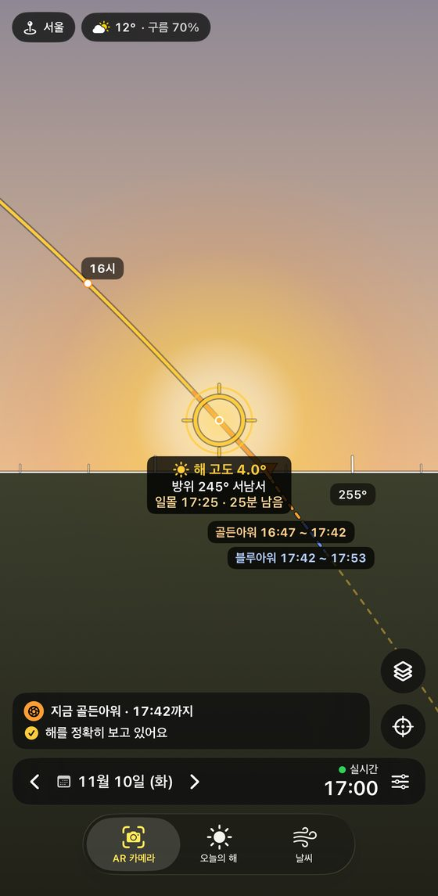
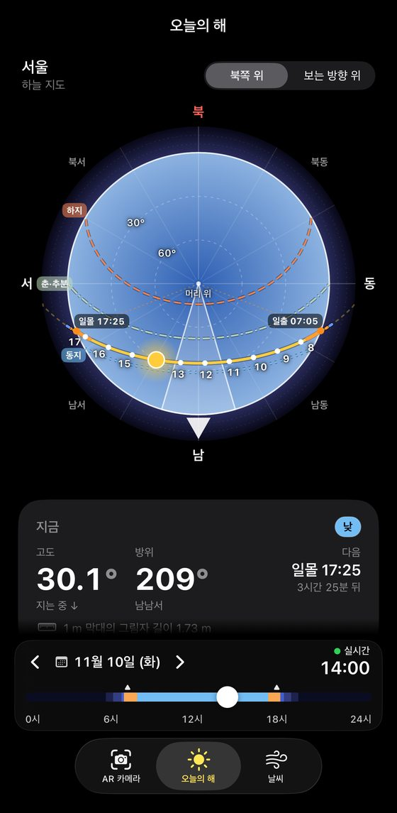
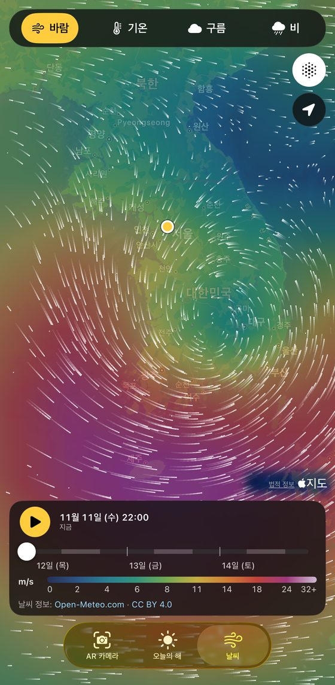
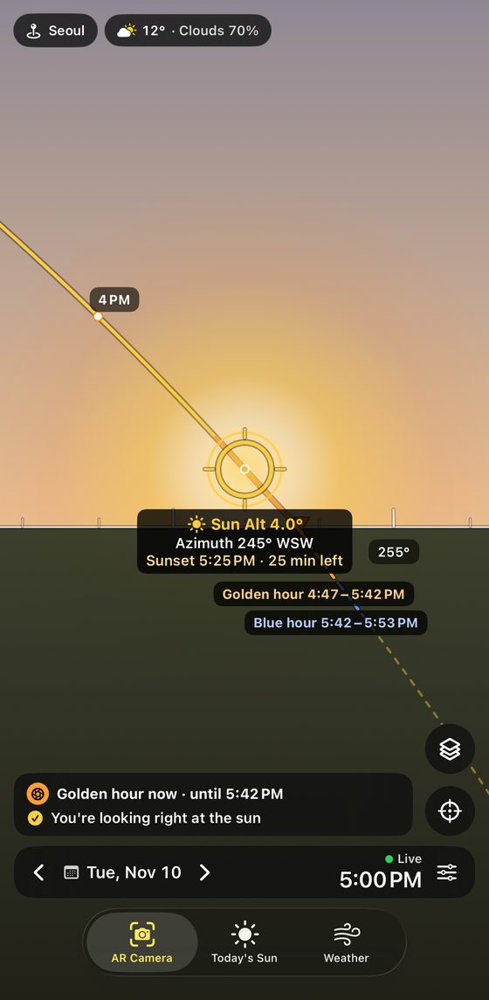
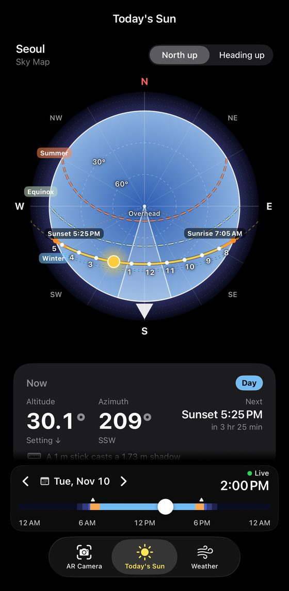
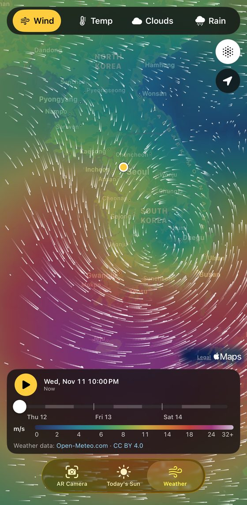

해가 지나갈 길을
카메라 위에
Suntrail(해길)은 지금 서 있는 곳에서 해가 어디에 있고, 오늘 어디로 지나가는지 보여 주는 아이폰 앱이에요. 골든아워와 블루아워, 일출·일몰 시각, 바람과 구름의 흐름까지 한곳에서 봐요.
무료이고 계정이 필요 없어요. 광고도 없어요. iPhone, iOS 17 이상에서 한국어와 영어로 쓸 수 있어요.
App Store에서 ‘Suntrail’을 찾아 주세요.
화면은 세 개예요

AR 카메라
카메라를 하늘로 들면 해의 자리와 오늘 해가 지나갈 길, 정시가 겹쳐 보여요. 골든아워는 금색, 블루아워는 파란색으로 칠하고 언제까지인지 알려 줘요.

오늘의 해
위에서 내려다본 하늘 지도, 지금 해의 고도와 방위, 하루 고도 그래프, 박명부터 일몰까지의 시각표와 시간별 날씨를 한 화면에서 봐요.

날씨 지도
바람·기온·구름·비를 지도 위 색으로, 바람은 움직이는 흐름으로 보여 줘요. 시간 막대로 약 3일 뒤까지 넘겨 보고, 지도를 누르면 그 지점 날씨가 나와요.
이런 것도 돼요
- 밤에도 낮의 해 길을
- 시간 막대를 끌거나 달력에서 날짜를 고르면 그때의 해를 봐요. 일출·남중·일몰, 춘분·하지·추분·동지로 한 번에 가요.
- 나침반 보정
- 휴대폰 나침반은 몇 도씩 어긋날 수 있어요. 화면 속 실제 해를 누르면 그만큼 방위를 바로잡아요.
- 다른 도시의 해
- 서울·부산·정동진·성산일출봉부터 도쿄·런던·뉴욕·트롬쇠까지 15곳의 해를 미리 봐요.
- 기기 안에서 계산
- 해 위치는 NOAA 계산식으로 휴대폰 안에서 계산해요. 천문 계산 기준값 6,750건과 견줘 하늘 위치 0.02° 안, 일출·일몰 1분 안으로 맞는 것을 확인했어요.
개인정보
계정, 광고, 추적이 없어요. 해는 휴대폰 안에서 계산하고, 날씨를 받을 때만 약 1 km 단위로 줄인 좌표를 Open-Meteo로 보내요. 카메라 영상은 화면에 보여 주기만 하고 저장하거나 보내지 않아요.
문의
궁금한 점이나 문제가 있으면 이메일로 알려 주세요. 기기 모델과 iOS 버전, 가능하면 화면 캡처를 함께 보내 주시면 더 빨리 확인할 수 있어요.
보정 방법, 권한, 날씨 출처, 언어는 도움말에 정리해 두었어요.
Today’s sun path, drawn over your sky
Suntrail is an iPhone app that shows where the sun is from the spot you’re standing on, and where it will travel today. Golden and blue hour, sunrise and sunset times, and the flow of wind and clouds, all in one place.
Free, with no account and no ads. For iPhone with iOS 17 or later, in English and Korean.
Search for “Suntrail” on the App Store.
Three screens

AR Camera
Hold your phone up to the sky to see the sun’s position, today’s path and the hour marks. Golden hour is painted gold and blue hour blue, with the time each one ends.

Today’s Sun
A top-down sky map, the sun’s current altitude and azimuth, an altitude graph, a timetable from twilight to sunset, and hourly weather on one screen.

Weather Map
Wind, temperature, clouds and rain as colors on the map, with wind as moving streaks. Step about 3 days ahead with the time bar, and tap the map for the weather at that spot.
More you can do
- See the daytime sun at night
- Drag the time bar or pick a date in the calendar to see the sun at that moment. Jump straight to sunrise, solar noon, sunset, or an equinox or solstice.
- Compass calibration
- A phone’s compass can be off by a few degrees. Tap the real sun on the screen and the heading is corrected by that amount.
- The sun in other cities
- Preview the sun in 15 places, from Seoul and Busan to Tokyo, London, New York and Tromsø.
- Calculated on your phone
- The sun’s position is calculated on the device with the NOAA algorithm, checked against 6,750 astronomical reference values: within 0.02° in the sky and within 1 minute for sunrise and sunset.
Privacy
No account, no ads, no tracking. The sun is calculated on your phone. Only to get the weather, coordinates rounded to about 1 km are sent to Open-Meteo. The camera view is only shown on screen and is never saved or sent.
Contact
Questions or problems? Send an email. Including your iPhone model, iOS version and, if you can, a screenshot helps us look into it faster.
Calibration, permissions, weather sources and languages are covered in Help.